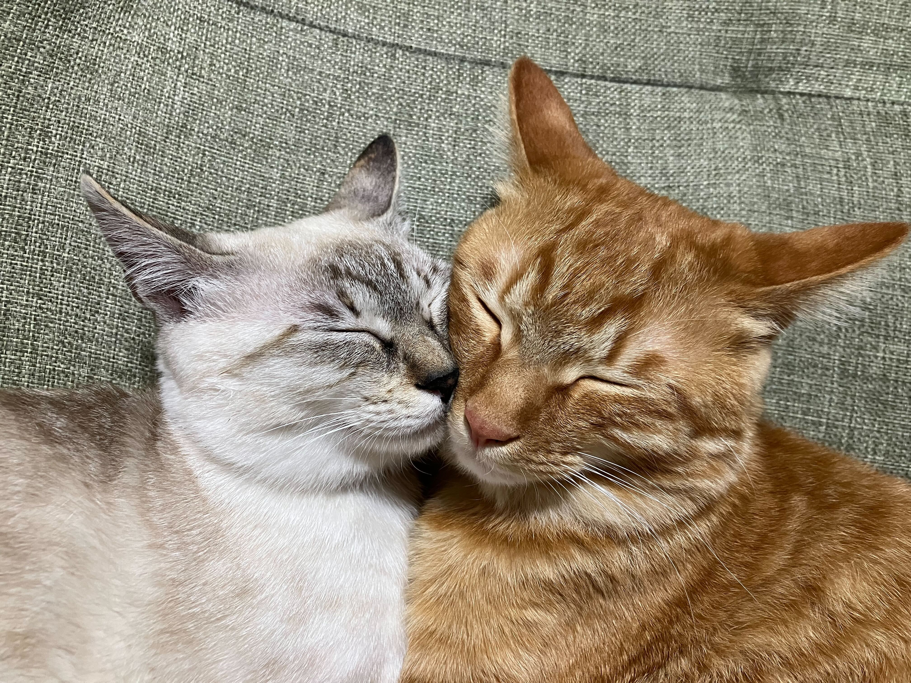
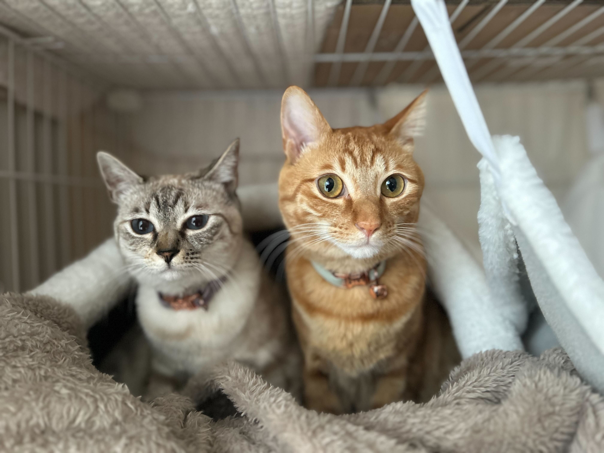

Hobby
-趣味について-
パソコンについて
パソコンに初めて触れたのは9歳頃、 当時大流行した「Minecraft」というゲームで遊び始めた事がパソコンを触るきっかけです。
20歳になった今でもパソコンを触るのが楽しくて幼い頃からずっと大好きです。
授業でパソコンを使うのはもちろん、自宅学習で、趣味で、色々な用途で使うのが何より楽しいです。
ゲームをしたり、MMDをしたり、タイピングをしたり、検定勉強に使ったり、沢山触ってます。
触れ始めた当初はパソコンをここまで大好きになるとは思ってなかったけど今思えば、パソコンは人生で初めてできた趣味かもしれません。
高校も専門学校もパソコンを扱う学校に進学して本当に良かったです。大好きなパソコンを続けられて幸せです。
好きな音楽について
特に好きなジャンルは、邦楽です。邦楽ならなんでも聴きます。
最近のトレンドを聴いたり、昔に発売された曲を聴いたり、聴くジャンルはさまざまです。
その中でも特に好きなアーティストは、Number_iというグループです。
CD沢山持ってます。サブスクよりもCD派。CDの配置を考えたり部屋のリメイクが楽しいです。
中学の時、合唱部で毎日歌っていた頃もですが、歌うことは物心ついた時からずっと大好きです。
歌うことの連鎖で音楽が好きになりました。音楽は人生に欠かすことのできない日常です。
最近ハマっていること
ここ最近は、ドラマや映画を見ることに熱中しています。
お芝居で二面性がある俳優が好きです。ギャップのある役柄は、作品ごとに違った良さを見ることができ作品により深く入り込むことができます。
好きなジャンルはラブコメ、サスペンス、ミステリー、コメディ系。基本どのジャンルも好きですが、ホラー系を得意になりたいです。
特に好きな俳優は、女性は戸田恵梨香、中村ゆり。男性は間宮祥太朗、眞栄田郷敦、綾野剛、北村一輝です。
どの俳優もとにかくお芝居が上手く美人で振る舞いひとつひとつに気品があって惹き込まれる人物だと感じます。
最近見たドラマは「コウノドリ」です。綾野剛主演。生まれたばかりの赤ちゃんに関する医療ドラマです。
暖かくて優しい時に切ない別れも、リアルな現場を描いたハートフルドラマ！おすすめの作品です。
猫について
猫を二匹飼っています。雑種のシャムトラ(♀)と茶トラ(♂)です。名前はララ、キキです。きょうだい猫。とても仲良し!!
推定二か月で我が家にやってきました。最初は片手に収まる程度まで小さかったのが今ではすごく大きくなりました。
猫は寝ているだけでも食べているだけでも遊んでいても所作一つ一つがかわいくて癒されます。
猫たちの名前を呼ぶと振り返って来てくれて一生懸命なにかを喋ってくれるのがたまらなくかわいいです。
猫たちが赤ちゃんの時から一緒にいるので親心のような不思議な感情が芽生えます。
 